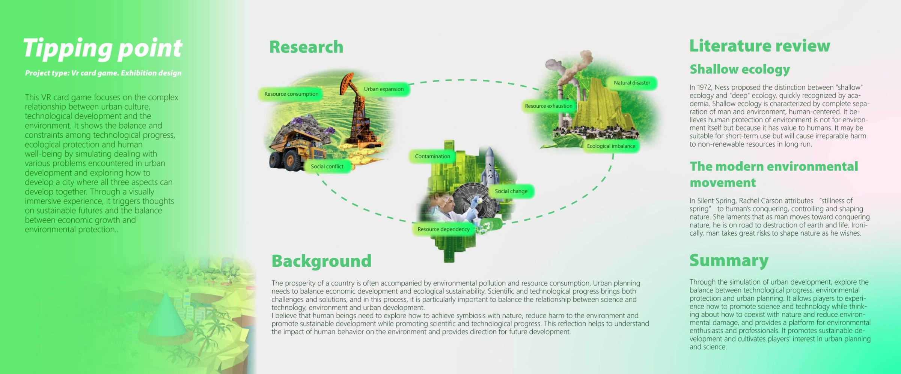
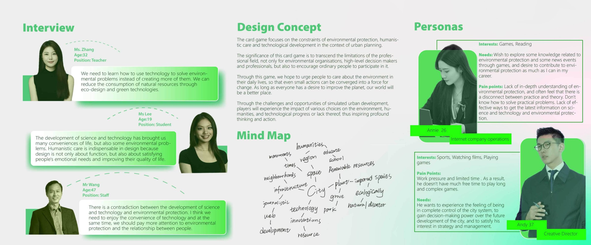
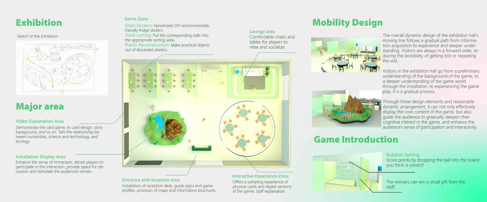
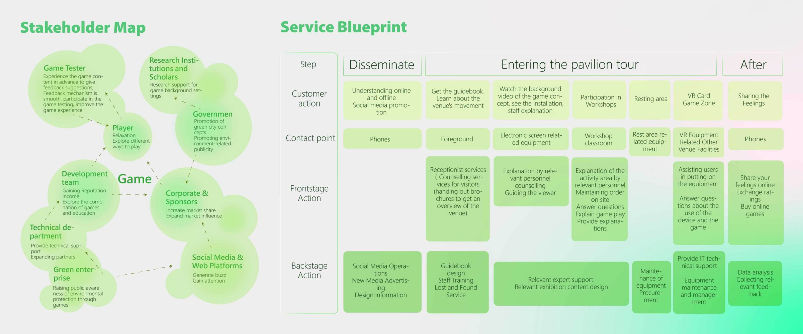
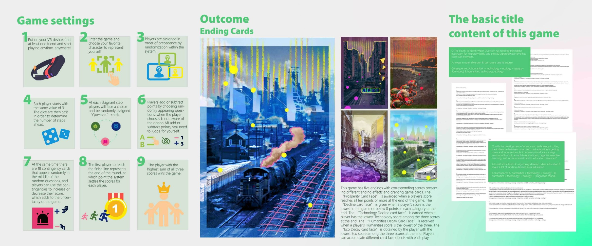
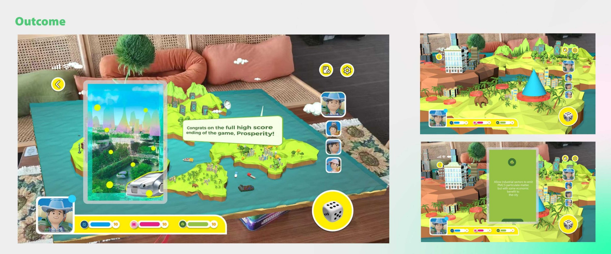
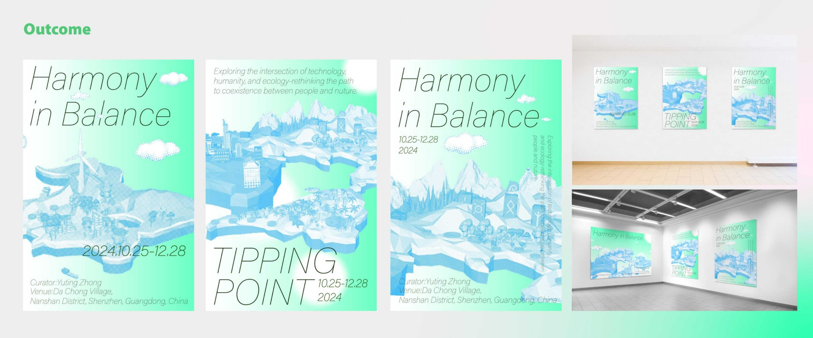

Tipping Point
A VR card game and exhibition concept about the relationship between technological development, urban culture and the environment. Players explore the consequences of decisions within a changing ecosystem.






